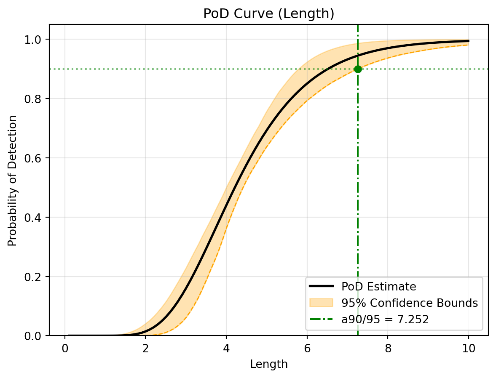

How digiqual relaxes the assumptions of the classical â-versus-a method, with a worked classical-vs-generalised comparison.
The classical \(\hat{a}\)-versus-\(a\) method fits a straight line to the signal response and assumes:
Linearity of the signal response with defect size, possibly after a log transform;
Homoscedasticity: the scatter around that line has constant variance;
Normality: the scatter is Gaussian.
Real inspections often break all three. Signals saturate, and roughness, angle or other nuisance effects make the scatter grow and become skewed. When that happens the classical PoD curve and its confidence bounds can be badly wrong. digiqual implements the generalised framework of Malkiel et al. (2025) M25, which relaxes each assumption in turn. The sections below follow the steps of that framework; Section 7 runs both methods on the same data so you can see the difference.
The Kriging candidate model has its own page, Kriging Metamodeling. It covers the GP maths, kernel choice, LOO diagnostics and pitfalls, and tags where each element comes from (M25, M26, UQLab or digiqual).
1 Choosing the expectation model (relaxing linearity)
Instead of forcing \(\hat{a} = \beta_0 + \beta_1 a\), digiqual treats the mean response as a model-selection problem. The candidates are polynomials of degree 1 to 10 and one Kriging model. Each is scored by 10-fold cross-validationM25 (Eq. 2.7–2.8):
where \(\hat{f}^{\setminus j}\) is the model trained without fold \(j\).
Picking the winner: the one-standard-error rule. In M25 (Fig. 5) the 3rd-, 4th- and 5th-order polynomials and Kriging all had almost the same CV error, and the authors chose the cubic “since it is the simplest one among those with smaller errors”. digiqual turns that judgement into a fixed rule digiqual:
Find the model with the lowest \(CV_{(10)}\).
Compute its standard error, \(SE = \operatorname{std}(MSE_1, \dots, MSE_{10}) / \sqrt{10}\). The M25 reference code records this quantity.
Choose the simplest model with \(CV_{(10)} \le \min CV + SE\). The complexity order is Polynomial 1, 2, …, 10, then Kriging.
A more flexible model, and Kriging in particular, is therefore chosen only when it is clearly better, not when it wins by less than the noise in the CV estimate. You can always override the choice with model_override="kriging" or "polynomial" (and force_degree), or with the model selector in the app.
Example. The true mean response below is quadratic in flaw length, plus a weak linear effect of probe angle. The cubic polynomial has the lowest CV error, but the fold-to-fold spread is large (the outlier lands in one fold), so every model except Poly 1 is within one standard error of it. Poly 2 is the simplest of those, so it is the automatic choice (red bar). In this case that is also the true model.
Figure 1: Model selection with the one-standard-error rule. The lowest CV error (bold row, red dash-dot line) belongs to Poly 3, but every bar below the dashed min + 1 SE line is statistically indistinguishable from it, so the simplest of those, Poly 2, is selected.
The Kriging candidate. Kriging enters this comparison in two stages. First its correlation function is chosen by leave-one-out error M26. Then that one kernel is scored by the same 10-fold CV as the polynomials. Details, including the LOO residual diagnostics and the factor \(\gamma\), are on the Kriging Metamodeling page. Kriging is skipped for datasets above 1000 samples.
Signal scatter often changes across the input space. digiqual replaces the constant variance \(\sigma^2 = c\) with a local estimate \(\sigma^2(x)\), using a Nadaraya-Watson Gaussian kernel smoother of the squared residuals \(e_i^2 = (y_i - \hat{y}_i)^2\)M25 (Eq. 2.9–2.11):
With several inputs, \(x - x_i\) is measured on standardised inputs (each divided by its standard deviation) digiqual, so one bandwidth treats all inputs alike whatever their units; M25 had a single input, where this only rescales \(h\). The bandwidth \(h\), in standard deviations, is chosen automatically by leave-one-out cross-validation, or fixed with bandwidth_ratio. For polynomial models the residuals are the usual in-sample ones. For Kriging they are leave-one-out residuals (why).
3 Inferring the error distribution (relaxing normality)
The residuals are standardised by the local standard deviation,
and the \(Z_i\) are fitted by maximum likelihood to a suite of candidate distributions M25 (§2f): Normal (norm), Gumbel Right (gumbel_r), Gumbel Left (gumbel_l, often a good fit to skewed ultrasonic crack reflections), Weibull Minimum (weibull_min), Weibull Maximum (weibull_max), Gamma (gamma), Exponential (expon), Logistic (logistic), Laplace (laplace), Student’s t (t), Beta (beta) and Uniform (uniform). The best fit is selected by the Akaike Information Criterion:
\[ AIC = 2k - 2\ln(\hat{L}) \]
where \(k\) is the number of parameters and \(\hat{L}\) is the maximised likelihood. A fit is only accepted if its support contains every \(Z_i\) with a margin digiqual: bounded families (Weibull, Gamma, Exponential, Beta, Uniform) can otherwise place a support endpoint on the most extreme residual, win on AIC, and make the PoD jump to exactly 0 or 1 just outside the data. UQLab, used in M25, likewise excludes unsuitable distributions. The PoD at each point is then \(1 - F\big((t - \hat{f}(x))/\hat{\sigma}(x)\big)\) for threshold \(t\) and the inferred CDF \(F\).
4 Multi-dimensional evaluation (marginalisation and slicing)
digiqual fits the mean and variance models to the entire\(n\)-dimensional input space. To project this onto a 1D or 2D PoD, every input not being plotted is either integrated out or held fixed.
4.1 Active marginalisation (nuisance parameters)
For a nuisance vector \(\mathbf{z}\) with density \(p(\mathbf{z})\), the PoD for parameters of interest \(\mathbf{x}\) is
digiqual approximates this integral by Monte Carlo integration with Latin Hypercube Sampling. Nuisance inputs are uniform over their observed range by default. For a custom distribution (Normal, Lognormal or Weibull), the \([0, 1]\) LHS coordinates \(u_{i,j}\) are mapped through the inverse CDF, \(z_{i,j} = F_j^{-1}(u_{i,j})\). The Quick Start explains why a realistic nuisance distribution matters.
4.2 Parameter slicing (constant parameters)
Inputs that are neither plotted nor integrated out are held constant, at their median by default or at a value you choose. The PoD is then a “slice” through the response surface, which lets you explore a specific scenario without refitting the models.
5 Bootstrapping for confidence bounds
With a non-linear, non-normal model, the classical analytical confidence bounds no longer apply. digiqual uses bootstrap resamplingM25 (§2i):
Draw \(N\) samples with replacement from the data.
Refit the mean model, variance model and error distribution. The model type (polynomial degree or Kriging kernel) and the distribution family stay fixed; for Kriging the hyperparameters are frozen too (details).
Calculate the PoD curve.
Repeat \(B\) times (typically \(B = 1000\)).
Take percentiles at every point to form confidence bounds at several levels at once (50 %, 90 %, 95 %, 99 %). From these, digiqual builds the reliability matrix of \(a_{X/Y}\) values (e.g. \(a_{90/95}\)).
6 Global sensitivity analysis (Sobol indices)
To show which inputs drive the signal, digiqual computes total-order Sobol indices of the fitted mean response. For \(Y = f(X_1, \dots, X_d)\),
where \(X_{\sim i}\) denotes all inputs except \(X_i\). \(S_{T_i}\) includes \(X_i\)’s direct effect and all its interactions. The indices are estimated with SALib by sampling the input space and evaluating the mean model. They are cached with the variance model and shown as percentages in the app.
Summary: how each type of parameter is treated
Parameter type
Model fit
Mean curve / PoD
Bootstrap
Parameter(s) of interest
Input dimension of the surrogate.
Defines the evaluation grid (the plot axes).
Same grid in every resample.
Sliced (constant)
Input dimension of the surrogate.
Held at a fixed value.
Held at the same value in every resample.
Nuisance (marginalised)
Input dimension of the surrogate.
Monte Carlo sampled from its distribution and averaged out.
Re-sampled and averaged in every resample.
7 Worked example: classical vs generalised
This example generates data that deliberately breaks the classical assumptions and runs both methods on it. The signal grows quadratically with flaw length, falls with misalignment angle, and has scatter that grows with surface roughness, a nuisance parameter.
7.1 Setup and data
import numpy as npimport pandas as pdimport matplotlib.pyplot as pltfrom digiqual.core import SimulationStudyfrom digiqual.sampling import generate_lhs# --- Define the Non-Linear Physics ---def apply_physics(df):"""Simulates a multidimensional signal with nuisance parameters."""# Base Signal: Quadratic trend (2*L + 0.5*L^2)# Angle Penalty: Misalignment (-0.1*Angle) reduces signal signal = (10.0+ (2.0* df["Length"])+ (0.5* df["Length"] **2)- (0.1* np.abs(df["Angle"])) )# Heteroscedastic Noise: Higher roughness = More scatter noise_scale =0.5+ (1.5* df["Roughness"]) noise = np.random.normal(loc=0, scale=noise_scale, size=len(df))return signal + noise# --- Create the Dataset ---# Latin Hypercube Sampling covers the 3D space efficientlyvars_df = pd.DataFrame( [ {"Name": "Length", "Min": 0.1, "Max": 10.0}, {"Name": "Angle", "Min": -45.0, "Max": 45.0}, {"Name": "Roughness", "Min": 0.0, "Max": 1.0}, ])np.random.seed(42)df = generate_lhs(ranges=vars_df, n=150, seed=42) # 150 points for 3D space (seeded: reproducible)df["Signal"] = apply_physics(df)study = SimulationStudy()study.add_data(df, outcome_col="Signal")
Data initialized/overwritten. Total rows: 150
7.2 The classical approach
The classical method is applied with log transforms of both axes (xlog=True, ylog=True) to give the straight line its best chance. Its confidence bounds are computed by bootstrap rather than the MIL-HDBK-1823A formulas, which keeps the classical assumptions (a straight line, constant variance, normal errors) while making the worst-case curve easy to obtain. Like the generalised path, linear_pod stores bounds for 50 %, 90 %, 95 % and 99 % confidence in ci_bounds and reliability_table.
# Run the classical linear PoD analysislinear_results = study.linear_pod( poi_col="Length", threshold=30, xlog=True, ylog=True, n_jobs=-1, # Use all CPU cores for fast bootstrapping)# Visualise the standard signal fit and PoD curvestudy.visualise_linear(show=True)
(a) Linear Signal Response Model (Assuming Constant Variance)

(b) Classical PoD Curve (With Bootstrapped Confidence Bounds)
Figure 2: Classical Linear Analysis Results
Tip
Look at the 95 % prediction interval. The classical method assumes one constant scatter for every flaw, so the interval has the same width everywhere. In this data the scatter depends on roughness, which the classical fit ignores, and on top of that the straight line cannot follow the curved trend.
7.3 The generalised approach
The generalised method selects the mean model by cross-validation (Section 1), models the changing scatter (Section 2), infers the error distribution (Section 3) and integrates out Angle and Roughness (Section 4.1). Its bootstrap (Section 5) gives the same set of confidence levels.
# Run the generalised PoD analysis# n_jobs=-1 runs the bootstrap process on all available CPU coresstudy.pod( poi_col="Length", nuisance_col=["Angle", "Roughness"], threshold=30.0, n_jobs=-1)# Visualise the relaxed signal fit and PoD curvestudy.visualise(show=True)
--- Starting Reliability Analysis (PoIs: ['Length'] - Nuisance: ['Angle', 'Roughness']) ---
1. Training all surrogate models (Cache Miss)...
-> Selected Model: Polynomial (Degree 2)
2. Fitting Variance Model & Inferring Distribution (Cache Miss)...
-> Optimizing bandwidth via LOO-CV...
-> Calculating Total-Order Sobol Indices...
-> Smoothing Bandwidth: 0.7636 (input std devs)
-> Selected Distribution: beta
3. Integrating PoD Curve from Scratch (Cache Miss)...
4. Running Bootstrap (1000 iterations on 10 cores)...
-> [Bootstrap] Running 1000 iterations on 10 worker core(s)...
-> [Bootstrap Progress] Completed 50/1000 iterations (5%)...